Do que trata o artigo
O estudo examina a evolução estrutural e conceitual do PMBOK® Guide nas 6ª, 7ª e 8ª edições, usando a tensão entre prescrição e adaptação como eixo de análise. Trata-se de uma análise documental qualitativa de documentos primários do Project Management Institute (PMI), apoiada em literatura sobre análise documental, ambidestria organizacional, teoria institucional, sustentabilidade e abordagens adaptativas.
O padrão observado é de recomposição, e não de substituição linear: a 6ª edição organiza o conteúdo em torno de processos; a 7ª o reorganiza em torno de princípios e domínios de desempenho, mantendo os processos como um modelo possível; e a 8ª, publicada em novembro de 2025, conserva princípios e domínios e reintroduz a orientação de processos em forma não prescritiva.
Objetivos específicos
- Comparar as principais unidades estruturais de cada edição.
- Examinar a mudança de estatuto da prescrição processual.
- Interpretar a expansão do tailoring e das abordagens híbridas.
- Avaliar a ambidestria organizacional como hipótese teórica para essa trajetória.
Prescrição e adaptação
O ponto central é como mecanismos de coordenação distintos se combinam; a oposição absoluta entre processos e adaptação explica pouco.
Em ambientes estáveis e muito regulados, estruturas padronizadas favorecem a comparabilidade, a governança e a rastreabilidade. Em ambientes incertos, a adaptação permite responder a mudanças, a dependências e ao aprendizado que ocorre durante a execução.
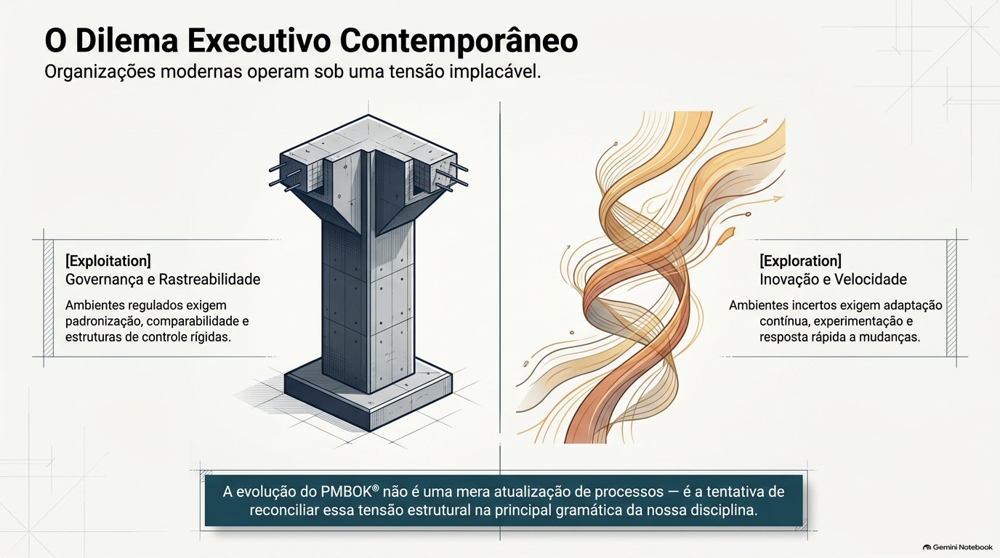
O PMI já tratava dessa lógica no Agile Practice Guide, que faz da escolha do ciclo de vida uma decisão dependente do contexto (PMI; AGILE ALLIANCE, 2017). A 7ª edição ampliou essa orientação ao colocar o tailoring no centro da arquitetura, e a 8ª a preserva, sem retomar a ideia de que todos os projetos devam seguir o mesmo conjunto de processos.
A dialética como lente
Três movimentos analíticos, construídos pelo pesquisador, e não categorias oficiais do PMI.
A dialética entra como lente interpretativa, útil para examinar contradições, deslocamentos e recomposições. O artigo recorre a Hegel (1977), para quem a superação combina negação e preservação em outro nível, e a Seo e Creed (2002), que aplicam a perspectiva dialética à mudança institucional.
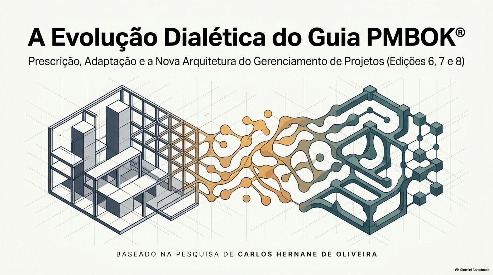
Três edições, três arquiteturas
Cada edição recebeu um código analítico conforme a função normativa declarada em seus próprios documentos.
Predominância processual
10 Knowledge Areas, 5 Process Groups e 49 processos descritos por entradas, ferramentas e técnicas e saídas.
Esse detalhamento ofereceu rastreabilidade e tornou a edição referência para organizações que demandavam padronização e governança.
Deslocamento para princípios
12 princípios e 8 Performance Domains, com ênfase em resultados, adaptação e tailoring.
O FAQ oficial esclarece que os Process Groups seguem como um dos modelos disponíveis (PMI, 2021b).
Recomposição
6 princípios e 7 Performance Domains, com orientação de processos reintroduzida de forma evoluída e não prescritiva (PMI, 2025).
Não é retorno à 6ª edição: a orientação processual aparece junto de princípios, domínios e tailoring.
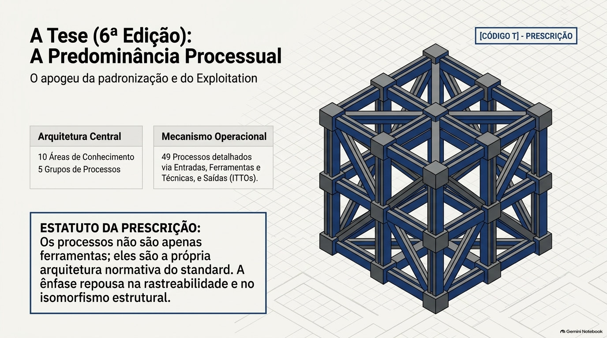
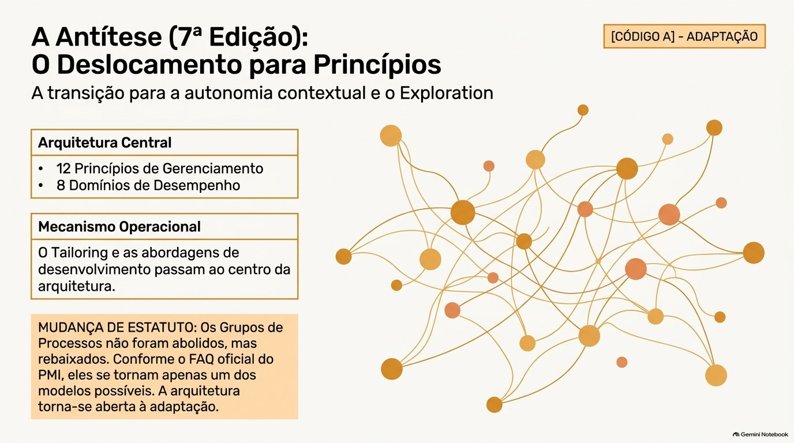
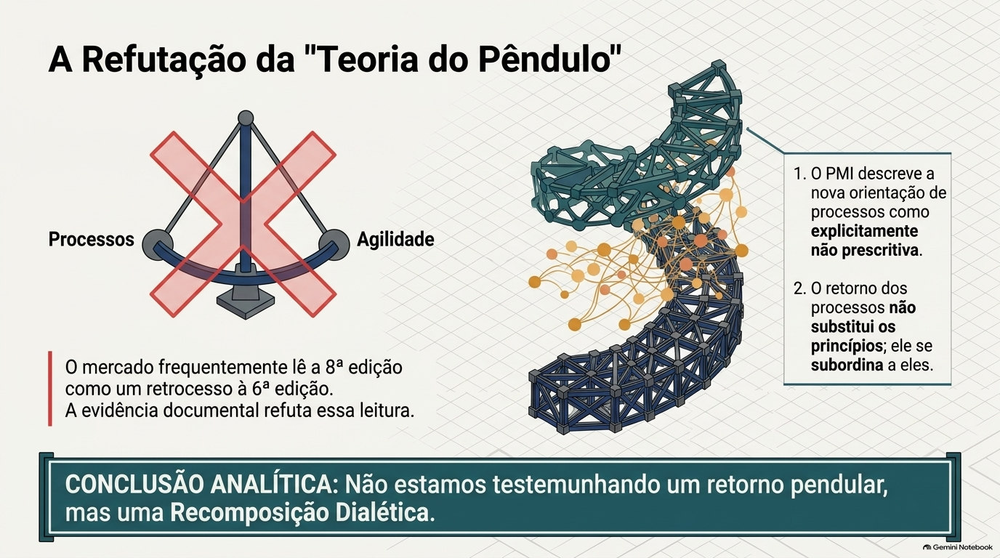
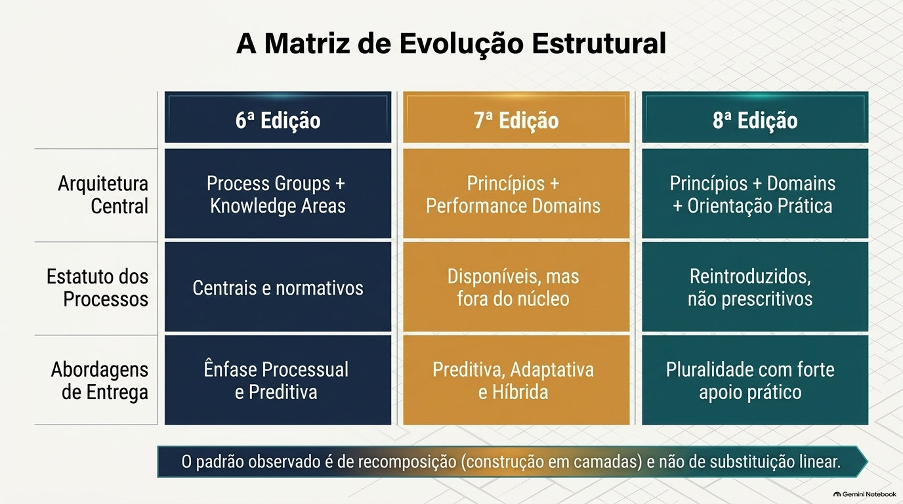
O que mudou, portanto, foi o estatuto dos processos: de arquitetura dominante na 6ª, a modelo possível na 7ª, e a orientação não prescritiva na 8ª. É uma continuidade com mudança de estatuto.
Ambidestria metodológica
A contribuição teórica do artigo, formulada como hipótese interpretativa.
March (1991) distingue exploration, a busca de novas possibilidades, de exploitation, o refinamento e o uso de conhecimentos existentes. O’Reilly e Tushman (2013) tratam a ambidestria organizacional como a capacidade de sustentar as duas atividades ao mesmo tempo.
O artigo define ambidestria metodológica como a presença simultânea, na arquitetura de um standard, de elementos voltados à padronização e ao aproveitamento de práticas estabelecidas e de elementos voltados à adaptação e à experimentação, acompanhada de uma regra explícita para escolher entre eles.
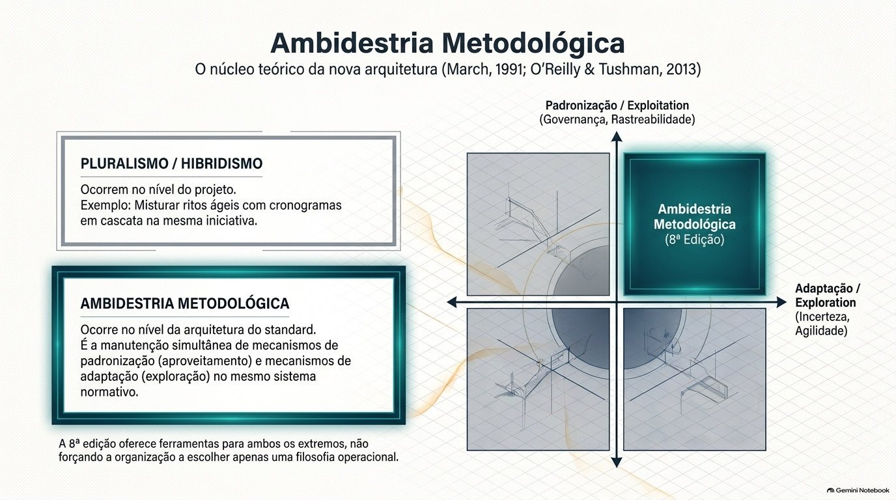
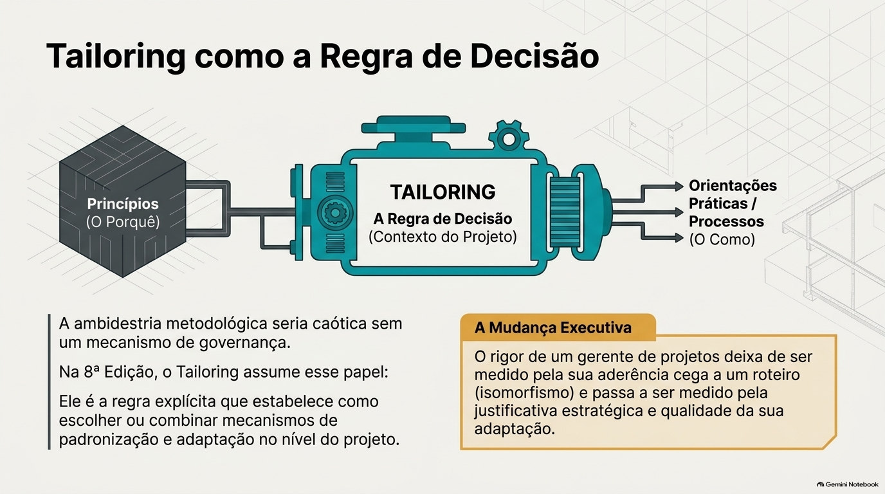
Por que não basta falar em tailoring, hibridismo ou pluralismo
Os três descrevem fenômenos reais, mas respondem a perguntas diferentes e operam sobretudo no nível do projeto ou do campo profissional. A ambidestria metodológica opera no nível da arquitetura do standard e acrescenta a regra que estabelece como escolher ou combinar os mecanismos.
| Conceito | O que explica | O que não explica |
|---|---|---|
| Tailoring | Adaptação de uma abordagem ao contexto de um projeto | Por que o standard mantém, ao mesmo tempo, elementos prescritivos e adaptativos |
| Hibridismo | Combinação de diferentes abordagens | A hierarquia entre elas e a regra de escolha |
| Pluralismo | Coexistência de diferentes formas de organizar o trabalho | O critério que orienta a seleção entre essas formas |
| Ambidestria metodológica | Manutenção simultânea de mecanismos de padronização e de adaptação, com regra de escolha | Efeitos sobre o desempenho das organizações usuárias, o que exigiria evidência empírica |
Leituras concorrentes e legitimidade
Para reduzir o risco de viés de confirmação, a hipótese é confrontada com três explicações alternativas.
A tese da continuidade explica bem a 7ª edição, mas não a reintrodução da orientação de processos na 8ª. A leitura pendular pressupõe que a 8ª retorne à posição da 6ª, o que contraria a descrição do PMI de uma orientação processual não prescritiva. A adequação ao ambiente, em linha com a teoria institucional, é compatível com a ambidestria metodológica, mas o corpus não permite testá-la.
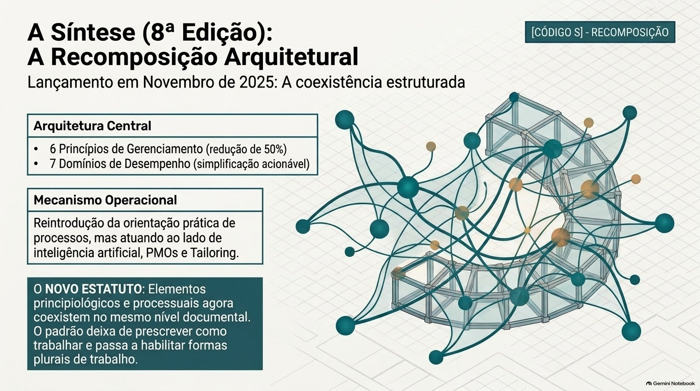
Teoria institucional
DiMaggio e Powell (1983) ajudam a discutir por que standards profissionais incorporam elementos associados a expectativas diversas do ambiente: pressões regulatórias (coercitivo), imitação de práticas legitimadas (mimético) e profissionalização (normativo).
Sustentabilidade na arquitetura
Um componente da arquitetura contemporânea do gerenciamento de projetos, sem vínculo formal comprovado com os ODS.
A literatura discute a integração das dimensões econômica, social e ambiental às decisões de projeto (ELKINGTON, 1997; SILVIUS; SCHIPPER, 2014; MARTENS; CARVALHO, 2017). Na 8ª edição, o PMI inclui a sustentabilidade entre os princípios (PMI, 2025).
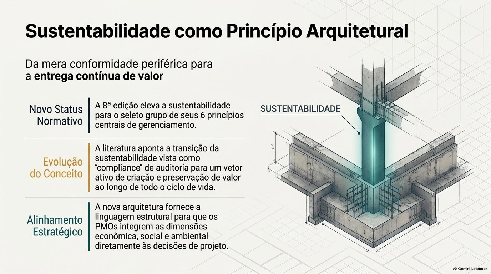
Método, proposições e limites
O desenho torna a interpretação examinável por outros pesquisadores.
O corpus principal reúne seis documentos: PMBOK® Guide 6ª, 7ª e 8ª edições, o FAQ da 7ª, o Agile Practice Guide e o Scrum Guide 2020. A codificação seguiu três categorias (T, A e S) com definições operacionais e critérios de exclusão, e quatro proposições foram avaliadas por critérios explícitos de consistência e de refutação.
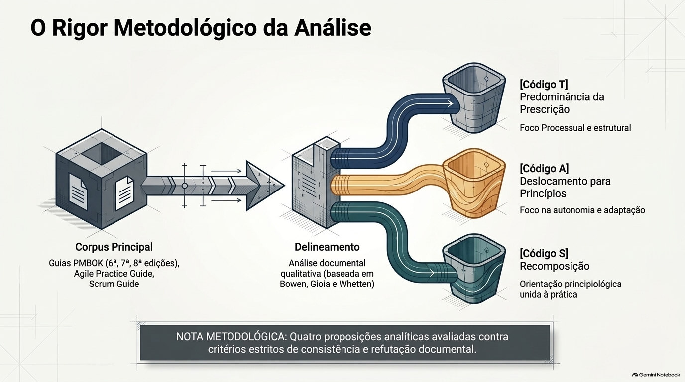
| Proposição | Avaliação |
|---|---|
| P1. Da 6ª para a 7ª edição, a unidade estrutural passa de processos para princípios e domínios, e os processos permanecem como modelo possível. | Consistente com o corpus, nos limites do desenho documental |
| P2. A 8ª edição conserva princípios e domínios e reintroduz a orientação de processos sem caráter prescritivo. | Consistente, nos limites da descrição oficial do PMI |
| P3. A arquitetura da 8ª edição reúne padronização e adaptação com regra explícita de escolha, configurando ambidestria metodológica. | Parcialmente consistente: a coexistência é apoiada, e a regra de escolha deve ser confirmada por seção no texto integral |
| P4. A sustentabilidade integra o conjunto de princípios da 8ª edição. | Consistente, nos limites do desenho documental |
Nenhuma proposição foi refutada, mas o alcance desse resultado é limitado: os critérios de refutação foram formulados pelo próprio pesquisador e aplicados por um único codificador.
Cinco limitações declaradas
- Temporal: a 8ª edição é recente e ainda não oferece base empírica longitudinal.
- Interpretativa: as categorias são construídas pelo pesquisador e podem ser reavaliadas por outras lentes.
- Documental: documentos normativos não revelam como organizações aplicam suas recomendações.
- Comparativa: o estudo se concentra no PMI e em três edições.
- Metodológica: codificação por um único pesquisador, sem concordância entre codificadores.
Considerações finais
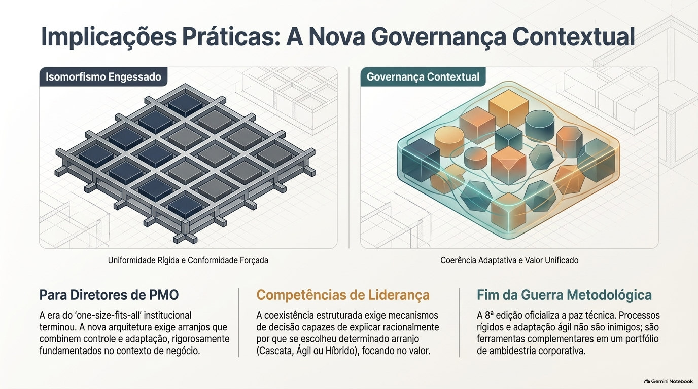
A comparação das três edições indica uma reconfiguração da relação entre prescrição e adaptação. A 6ª colocou a arquitetura processual no centro; a 7ª deslocou a estrutura normativa para princípios, domínios e tailoring; a 8ª manteve essa base e reincorporou a orientação de processos de maneira não prescritiva.
A ambidestria metodológica é uma conclusão interpretativa que exige validação empírica. A 8ª edição pode ser entendida como uma arquitetura que conecta o “porquê”, o “quê” e o “como” do gerenciamento de projetos, preservando a flexibilidade sem abandonar a orientação prática.
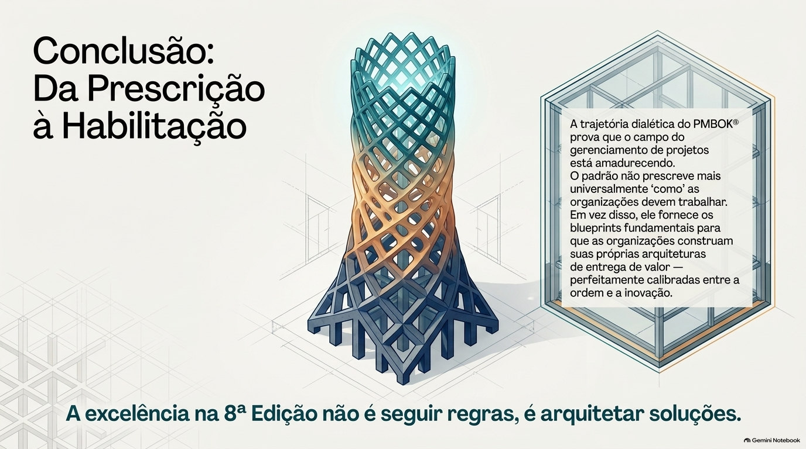
Referências
- BARDIN, L. Análise de conteúdo. São Paulo: Edições 70, 2016.
- BOWEN, G. A. Document analysis as a qualitative research method. Qualitative Research Journal, v. 9, n. 2, p. 27-40, 2009. DOI: 10.3316/QRJ0902027.
- DIMAGGIO, P. J.; POWELL, W. W. The iron cage revisited: institutional isomorphism and collective rationality in organizational fields. American Sociological Review, v. 48, n. 2, p. 147-160, 1983. DOI: 10.2307/2095101.
- ELKINGTON, J. Cannibals with forks: the triple bottom line of 21st century business. Oxford: Capstone, 1997.
- GIOIA, D. A.; CORLEY, K. G.; HAMILTON, A. L. Seeking qualitative rigor in inductive research: notes on the Gioia methodology. Organizational Research Methods, v. 16, n. 1, p. 15-31, 2013. DOI: 10.1177/1094428112452151.
- HEGEL, G. W. F. Phenomenology of spirit. Translated by A. V. Miller. Oxford: Oxford University Press, 1977.
- MARCH, J. G. Exploration and exploitation in organizational learning. Organization Science, v. 2, n. 1, p. 71-87, 1991. DOI: 10.1287/orsc.2.1.71.
- MARTENS, M. L.; CARVALHO, M. M. Key factors of sustainability in project management context: a survey exploring the project managers’ perspective. International Journal of Project Management, v. 35, n. 6, p. 1084-1102, 2017. DOI: 10.1016/j.ijproman.2016.04.004.
- O’REILLY, C. A.; TUSHMAN, M. L. Organizational ambidexterity: past, present, and future. Academy of Management Perspectives, v. 27, n. 4, p. 324-338, 2013. DOI: 10.5465/amp.2013.0025.
- PMI. A guide to the Project Management Body of Knowledge (PMBOK® Guide): sixth edition. Newtown Square, PA: Project Management Institute, 2017.
- PMI. A guide to the Project Management Body of Knowledge (PMBOK® Guide): seventh edition and The Standard for Project Management. Newtown Square, PA: Project Management Institute, 2021a.
- PMI. PMBOK® Guide: Seventh Edition FAQs. Newtown Square, PA: Project Management Institute, 2021b.
- PMI. A guide to the Project Management Body of Knowledge (PMBOK® Guide): eighth edition and The Standard for Project Management. Newtown Square, PA: Project Management Institute, 2025.
- PMI; AGILE ALLIANCE. Agile practice guide. Newtown Square, PA: Project Management Institute, 2017.
- RAISCH, S.; BIRKINSHAW, J. Organizational ambidexterity: antecedents, outcomes, and moderators. Journal of Management, v. 34, n. 3, p. 375-409, 2008.
- SCHWABER, K.; SUTHERLAND, J. The Scrum Guide: the definitive guide to Scrum: the rules of the game. 2020.
- SEO, M.-G.; CREED, W. E. D. Institutional contradictions, praxis, and institutional change: a dialectical perspective. Academy of Management Review, v. 27, n. 2, p. 222-247, 2002. DOI: 10.2307/4134353.
- SILVIUS, A. J. G.; SCHIPPER, R. P. J. Sustainability in project management: a literature review and impact analysis. Social Business, v. 4, n. 1, p. 63-96, 2014. DOI: 10.1362/204440814X13948909253866.
- UN. Transforming our world: the 2030 Agenda for Sustainable Development. New York: United Nations, 2015.
- WHETTEN, D. A. What constitutes a theoretical contribution? Academy of Management Review, v. 14, n. 4, p. 490-495, 1989. DOI: 10.2307/258554.
- WINTER, M.; SMITH, C.; MORRIS, P.; CICMIL, S. Directions for future research in project management: the main findings of a UK government-funded research network. International Journal of Project Management, v. 24, n. 8, p. 638-649, 2006.